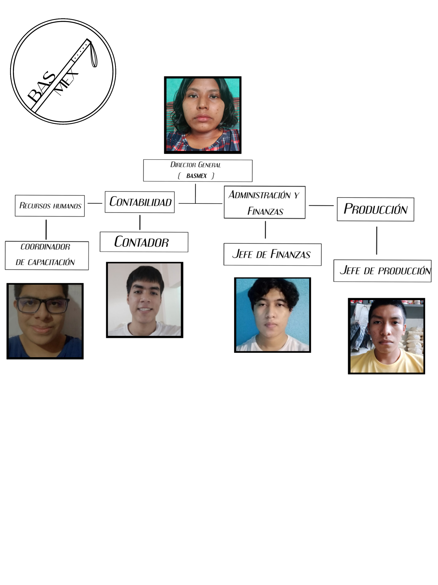
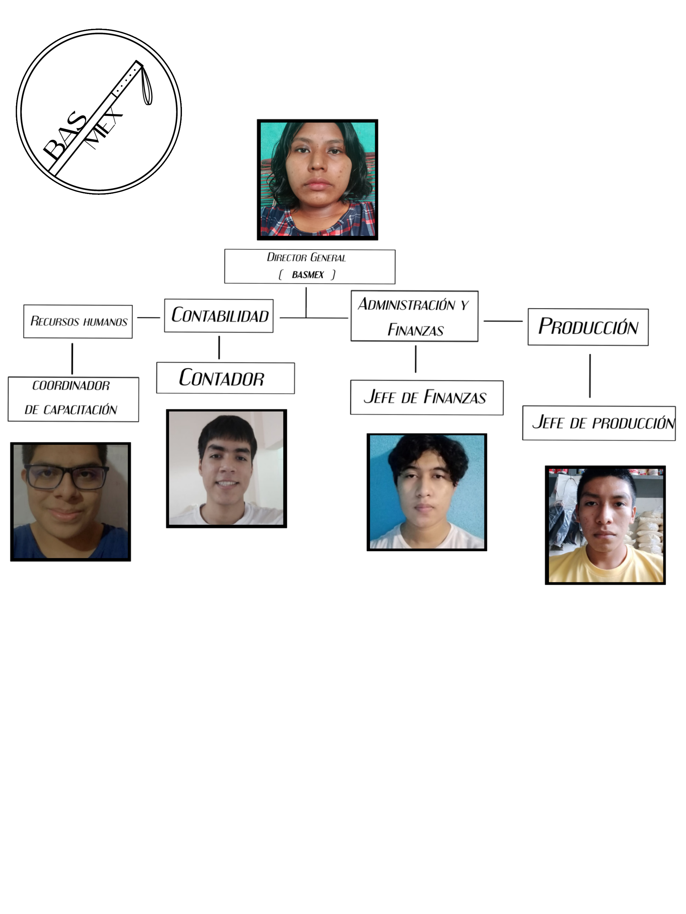

Cómo planeación
Nuestro Primer paso se hizo un plan sobre cómo se haría la presentación de nuestra empresa,
cómo todo un equipo optamos por no poner decoración, y enfocarnos en nuestra presentación.
El segundo paso fue explicar de qué manera se haría al presentar cada estaría en su área
esperando a los visitantes y la distribución de folletos. Cómo último pensamos en los presentes,
pero nuestra economía no estaba bien así que decidimos repartir a los jefes.
Se tomó registro de los invitados de distintas empresas se encargó de mantener el orden al
ingresar, se dio una bienvenida y se dio explicación de algunos conceptos importantes en la
empresa como la visión, misión y valores.
Buenas tardes a todos me presento soy la Directora general de la Empresa BASMEX una
empresa de bastones que busca llegar a distintas partes del estado y a manera nacional como
primer daré explicación sobre nuestros valores en nuestra empresa que no podemos dejar
pasar como es:
Respeto
Integridad
Honestidad
Cómo consiguiente pasaremos a los departamentos que forman nuestra empresa cómo primero
tenemos el área de Recursos Humanos a cargo del jefe de departamento Zadkiel Cruz
Hernández.
En esta presentación mi ocupación como jefe del departamento de finanzas fue la de dar a conocer el cómo se utilizan las estrategias de ese departamento para dar a conocer al público el manejo que se tiene sobre todos los recursos financieros de la empresa y como se administran y gestionan los mismos para así poder distribuirlos con el objetivo de mejorar el desarrollo de la empresa BAS MEX así como también su rendimiento ya sea en costos de producción o administrar nuestros diferentes tipos de ingresos y como estos ayudan a mejorar otras áreas de la misma empresa si son bien gestionados.
Se encargó de brindar información de su puesto en todo momento los invitados el cómo su área se encargado de gestionar al personal de una organización. Habitualmente, se conoce como el encargado de contratar y despedir al personal.
Pasamos al siguiente departamento que es el de contabilidad a cargo del compañero Angel del Castillo Mondragón hizo una breve explicación de su departamento
 
